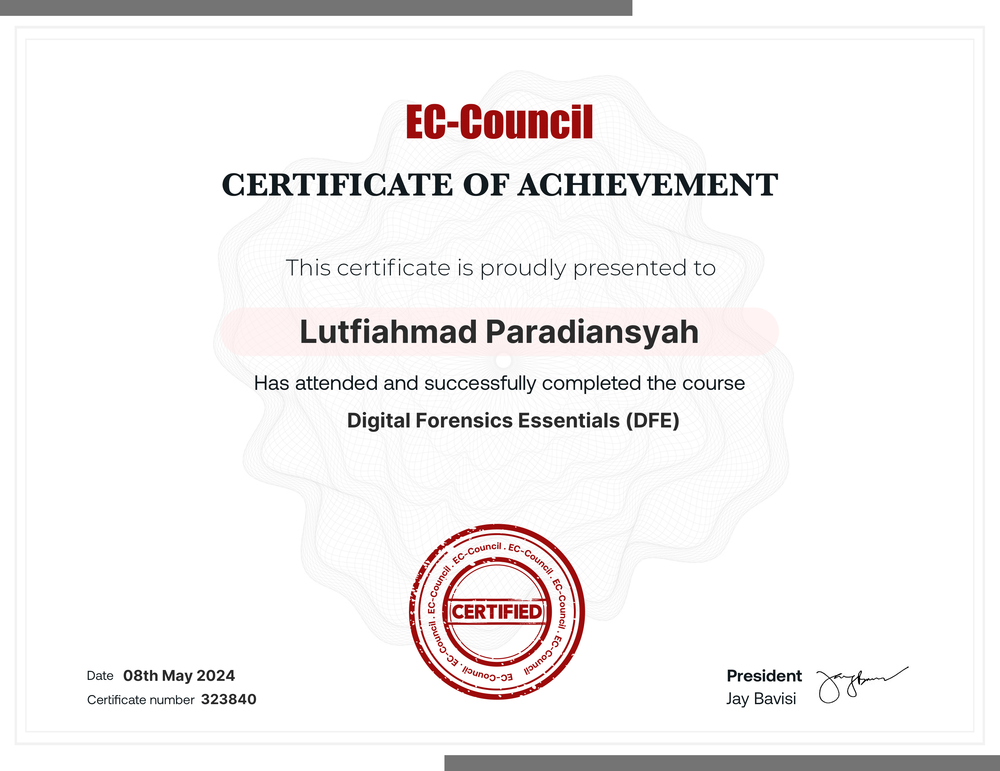
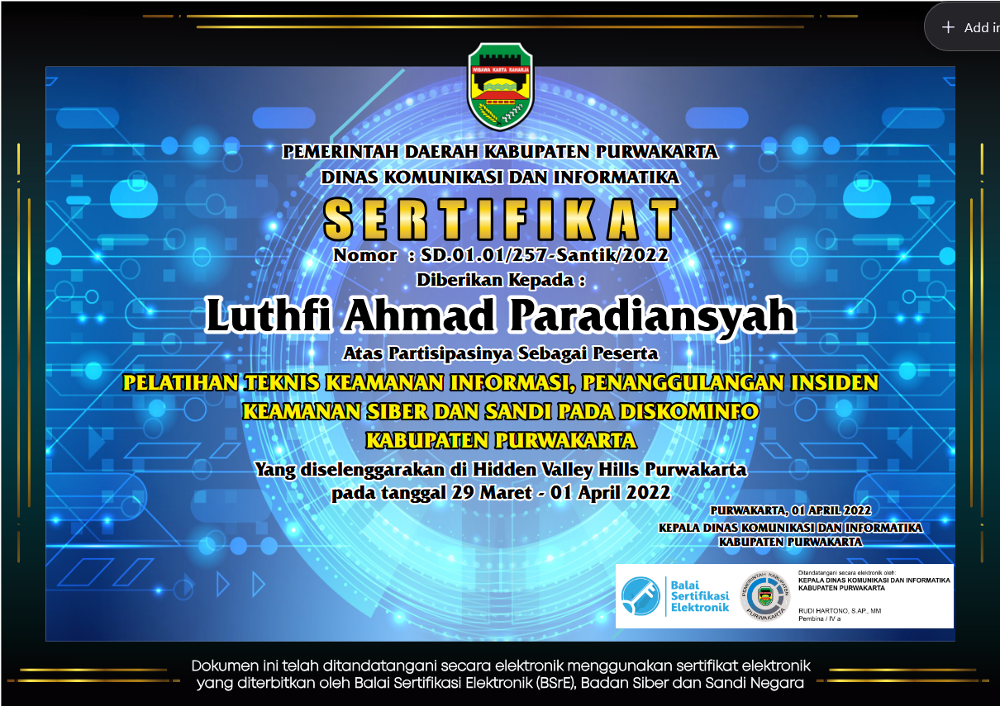
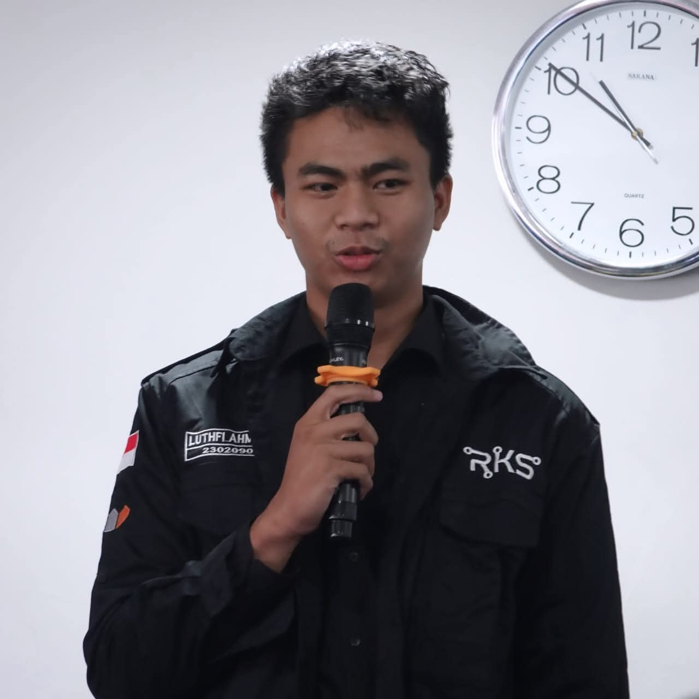

Sertifikasi & Lisensi




Luthfi Ahmad Paradiansyah
Mahasiswa PNC | Cybersecurity Specialist | Exploit Dev | Web Dev & SEO
Saya adalah seorang Mahasiswa Politeknik Negeri Cilacap (PNC) sekaligus spesialis keamanan siber yang berfokus pada Penetration Testing, Exploit Development, dan Bug Hunting. Menggabungkan intuisi analitis dengan kemampuan teknis mendalam untuk menemukan kerentanan sebelum pihak yang tidak bertanggung jawab melakukannya.
Selain keamanan siber, saya memiliki keahlian khusus di bidang Web Development dan SEO. Saya membangun arsitektur web yang tidak hanya kokoh dan aman dari serangan, tetapi juga teroptimasi penuh untuk visibilitas mesin pencari guna memaksimalkan jangkauan digital.
Keahlian saya mencakup Digital & Cloud Forensics, di mana saya menerapkan metodologi deduksi digital yang ketat untuk merespons insiden, melacak jejak intrusi, dan merekonstruksi serangan di lingkungan cloud yang kompleks.
Saya adalah pendukung kuat dari Terminal-First Workflow. Bagi saya, command line bukan sekadar alat, melainkan perpanjangan dari pemikiran analitis saya, memungkinkan eksekusi dan otomatisasi yang jauh lebih cepat dan presisi dalam setiap operasi keamanan.
Management, Pentesting & Cybersecurity Courses
Mengelola infrastruktur keamanan dan memimpin tim dalam melakukan penetrasi jaringan dan aplikasi. Saya juga aktif merancang silabus dan menjadi instruktur untuk berbagai kursus serta pelatihan keamanan siber komprehensif bagi komunitas dan profesional.
CEO & Founder, Startup Forensik Digital
Membangun perusahaan rintisan yang berfokus pada investigasi insiden siber, forensik digital, dan pemulihan data pasca-serangan ransomware untuk klien korporat.
Otomatisasi Keamanan Berbasis AI
Mengintegrasikan model kecerdasan buatan untuk analisis log anomali dan otomatisasi deteksi ancaman (Threat Hunting) guna mempercepat respons terhadap Zero-day exploits.
Cybersecurity & Server Operations
Mengelola keamanan infrastruktur server dan memastikan keandalan sistem berkinerja tinggi. Fokus pada penguatan server (server hardening), mitigasi risiko, dan pemantauan ancaman secara proaktif.
Otomatisasi Reconnaissance & Vulnerability Scanning
Merancang dan mengimplementasikan pipeline otomatisasi penetration testing menggunakan framework reNgine. Proyek ini diintegrasikan dengan standar operasional keamanan untuk meningkatkan efisiensi penemuan kerentanan dan pengelolaan aset secara proaktif pada infrastruktur skala besar.

